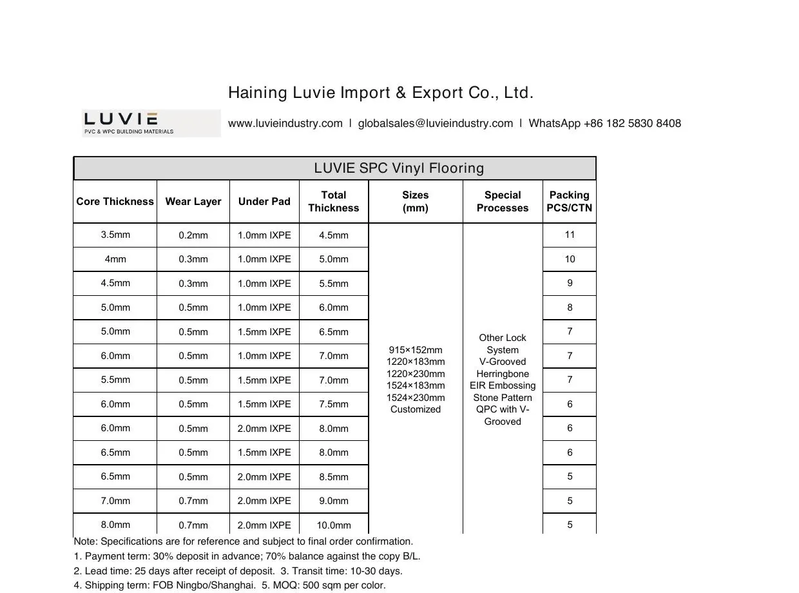

SPC quotations can look comparable while describing different products. A total thickness can include different core, wear-layer and attached-pad combinations.
Plank format, lock shape, embossing and packing then affect installation experience, warehouse planning and what the customer sees after purchase.
The cure is not a longer feature list: it is one complete, SKU-level product record before price is compared.
Read each layer for its own job
The core, wear layer and attached pad should be shown separately in your quotation and sample record.
The core is not the wear layer; a thicker attached pad is not the same decision as a thicker core; and two planks with a similar total thickness may have different components.
Use the construction statement to make quotations comparable, then judge the actual product using the approved full-plank sample and the intended project conditions.
Use the catalogue as a selection range, not a blanket promise
Start with the Luvie SPC flooring catalog (PDF), then request the current specification for the exact construction, plank and finish under review. A catalog range is a shortlist, not a test report or stock promise.
The supplied Luvie SPC specification sheet lists combinations from a 3.5 mm core with a 0.2 mm wear layer and 1.0 mm IXPE pad, through larger combinations with 0.5 or 0.7 mm wear layers and 1.0, 1.5 or 2.0 mm IXPE.
It lists 915×152, 1220×183, 1220×230, 1524×183 and 1524×230 mm sizes, with customization noted. It also shows several lock and surface options.
This is a useful range-planning reference, but the selected colour and order need their own final confirmation.

| Field to record | Why it changes the purchase decision |
|---|---|
| Core / wear layer / pad | Prevents total thickness from hiding a different construction. |
| Plank size and usable coverage | Supports project take-off, carton planning and display samples. |
| Lock and edge detail | Needs a full-plank trial; it should not be judged from a texture image. |
| Surface / embossing / colour code | Connects the physical approval sample to the finished order. |
| Pieces, sqm and gross weight per carton | Drives freight, warehouse and retail handling decisions. |
| Destination documents | Lets the buyer request only test reports or documents relevant to the exact market and SKU. |
Commercial details belong in the specification, too
For an EU destination, identify the intended use before asking for CE or Declaration of Performance documents. The European Commission CPR guidance explains why product scope and declared performance must be matched.
MOQ, lead time, packing and document availability must be confirmed for the selected SKU and destination. Do not copy a commercial term from another construction into the current offer.
Before you pay the deposit
- Approve a full plank, including colour, surface, lock and edge; retain the approved sample reference.
- Write the complete construction and plank size against every colour in the order.
- Confirm pieces per carton, sqm per carton, carton dimensions, gross weight and final loading calculation.
- Ask which product-specific documents are available for the destination. Verify their relevance to the exact SKU instead of collecting generic logos.
- Agree a production inspection point, carton mark, packing-list format and claim procedure before shipment.
Buyer FAQ
What documents should a distributor ask for?
Start with the destination requirement and the exact product. Request only documents that apply to that construction and market, then keep them with the SKU record.
How should after-sales be handled?
Agree the applicable terms, installation conditions, evidence needed for a claim and response process before sale. Do not state a performance result or warranty period until it is confirmed for the actual product and market.